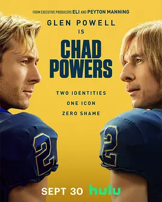

7.6
查德·鲍尔斯
Chad Powers
2025
美国
评分 7.6
导演:
托尼·亚辛达
演员:
格伦·鲍威尔 / 史蒂夫·扎恩 / 托比·哈斯 / 克莱恩·克劳福德 / 帕芮·马费尔德
类型:
动作,喜剧
剧情简介
在美国南部一所困顿的大学橄榄球队中，一位落魄的前天才四分卫俄斯·霍利迪（由格伦·鲍威尔饰演）背负着一场冠军赛的耻辱，八年飞逝，他从聚光灯下跌落，仿佛人生回到了起点。失去荣耀的他，为了重返赛场，不惜伪装身份，化妆成怪趣的“查德·鲍尔斯”，以新身份悄然加入球队，誓要证明自己仍有价值。他手足无措地融入队伍，披着假面走上训练场，从队友冷眼旁观到教练暗中观望，每一次抛投、每一次冲刺，都像在对自己说：“我还能站起来。”与此同时，他还得掩饰真实身份，与助教教练的女儿瑞琪之间产生默契、挣扎与信任交织。球场外，是兄弟情怀和父亲影子的叠加——父亲长期从事特效化妆，他的某些道具正成了俄斯重生的工具。片场的橄榄链结早已不仅仅是游戏，它是身份、自尊与救赎的博弈。本剧以俏皮却略带讽刺的语调展开：面对极富戏剧性的假装与揭露、胜利与失败、旧我与新我的更迭，俄斯的每一次跌倒都伴随着观众的隐忍会心。他的伪装既带来了机会，也不断提醒自己：真实才是最难扮演的角色。